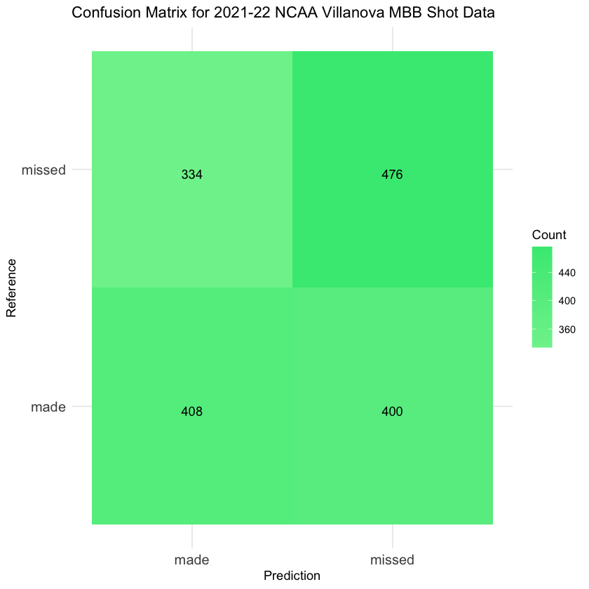
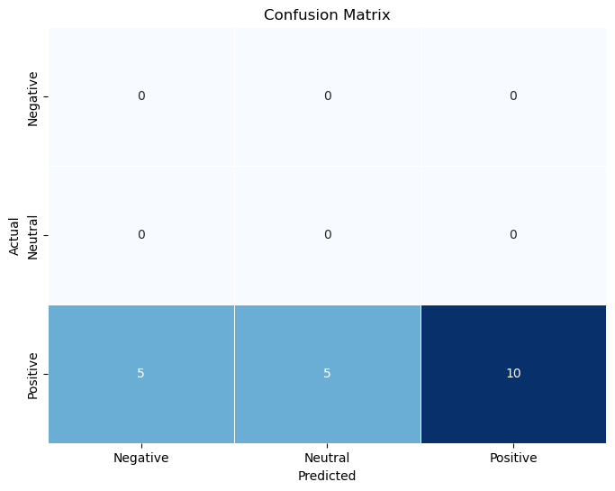

#here we are using R
#let's read in the dataset
nova2122 <- read.csv('./data/modified_data/nova2122_updated.csv')Naïve Bayes
*Disclaimer - this section is a work in progress
Please be aware that this page contains both Python and R code, thus you should avoid running the source code all at once.
Introduction to Naive Bayes
Naive Bayes, a widely acclaimed machine learning algorithm, harnesses Bayes’ Theorem to categorize data into predefined classes or categories. Praised for its simplicity, swift training capabilities, and robust performance, it stands as a foundational tool in data science. At its core, Bayes’ Theorem calculates the probability of event A given the occurrence of event B, expressed as: \[P(A|B) = \frac{P(B|A) \cdot P(A)}{P(B)}\] Naive Bayes accomplishes classifications by leveraging feature vectors and the principles of Bayes’ Theorem to assess values. The ‘naive’ label in its name stems from its assumption of independence among predictors, simplifying computational tasks. This algorithm excels in contexts featuring text and categorical data, excelling in applications like spam email identification, sentiment analysis, and document categorization. Despite its seemingly ‘naive’ premise, Naive Bayes consistently delivers impressive real-world performance, making it a crucial tool for various data science classification tasks.
Common varients of Naive Bayes include Multinomial, Guassian, and Bernoulli Naive Bayes. Multinomial Naive Bayes is the most common variant and is often used for text classification. Gaussian Naive Bayes is appropriate for continuous numerical data while Bernoulli Naive Bayes is a derivation of Multinomial Naive Bayes that is appropriate for binary or boolean data.
The purpose of this page is to implement Naïve Bayes classification on a variety of datasets, some of which may be more for suitable than others for this method. This work is a component of my DSAN 5000 class project.
Data Preparation
Data must initially be prepared to utilize a Naive Bayes model. Although a substantial part of this process has been covered in the data cleaning and exploratory data analysis (EDA) phases, all categorical and label columns must be converted into factor types. Additionally, data must be split into training and test subsets. This is done to train the model on one subset and subsequently evaluate the model’s performance on an independent dataset which can be used to asses the bias and variance of the machine learning model. In the following code, we will complete the preparation of the 2021-22 NCAA data and news data for modeling.
NCAA Data
# Load relevant libraries
library(tidyverse)
library(caret)#let's take another look at the dataset
str(nova2122)'data.frame': 5399 obs. of 15 variables:
$ game_id : int 401365747 401365747 401365747 401365747 401365747 401365747 401365747 401365747 401365747 401365747 ...
$ play_id : int 4 7 11 13 16 18 19 21 23 25 ...
$ half : int 1 1 1 1 1 1 1 1 1 1 ...
$ shooter : chr "Justin Moore" "Clifton Moore" "Clifton Moore" "Eric Dixon" ...
$ shot_outcome : chr "missed" "missed" "missed" "missed" ...
$ shooter_team : chr "Villanova" "La Salle" "La Salle" "Villanova" ...
$ shot_outcome_numeric: int -1 -1 -1 -1 1 1 -1 1 -1 -1 ...
$ shot_sequence : int -1 -1 -2 -1 1 1 -1 1 -1 -1 ...
$ previous_shots : int 0 0 -1 0 0 -1 0 0 1 0 ...
$ lag1 : int NA NA -1 NA NA -1 NA NA 1 NA ...
$ lag2 : int NA NA NA NA NA NA NA NA NA NA ...
$ lag3 : int NA NA NA NA NA NA NA NA NA NA ...
$ lag4 : int NA NA NA NA NA NA NA NA NA NA ...
$ lag5 : int NA NA NA NA NA NA NA NA NA NA ...
$ lag6 : int NA NA NA NA NA NA NA NA NA NA ...# changing columns to become a factor
nova2122$lag1 <- as.factor(nova2122$lag1)
nova2122$lag2 <- as.factor(nova2122$lag2)
nova2122$lag3 <- as.factor(nova2122$lag3)
nova2122$lag4 <- as.factor(nova2122$lag4)
nova2122$lag5 <- as.factor(nova2122$lag5)
nova2122$lag6 <- as.factor(nova2122$lag6)
nova2122$shot_outcome_numeric <- as.factor(nova2122$shot_outcome_numeric)#looking at how this changed the dataset
str(nova2122)'data.frame': 5399 obs. of 15 variables:
$ game_id : int 401365747 401365747 401365747 401365747 401365747 401365747 401365747 401365747 401365747 401365747 ...
$ play_id : int 4 7 11 13 16 18 19 21 23 25 ...
$ half : int 1 1 1 1 1 1 1 1 1 1 ...
$ shooter : chr "Justin Moore" "Clifton Moore" "Clifton Moore" "Eric Dixon" ...
$ shot_outcome : chr "missed" "missed" "missed" "missed" ...
$ shooter_team : chr "Villanova" "La Salle" "La Salle" "Villanova" ...
$ shot_outcome_numeric: Factor w/ 2 levels "-1","1": 1 1 1 1 2 2 1 2 1 1 ...
$ shot_sequence : int -1 -1 -2 -1 1 1 -1 1 -1 -1 ...
$ previous_shots : int 0 0 -1 0 0 -1 0 0 1 0 ...
$ lag1 : Factor w/ 2 levels "-1","1": NA NA 1 NA NA 1 NA NA 2 NA ...
$ lag2 : Factor w/ 2 levels "-1","1": NA NA NA NA NA NA NA NA NA NA ...
$ lag3 : Factor w/ 2 levels "-1","1": NA NA NA NA NA NA NA NA NA NA ...
$ lag4 : Factor w/ 2 levels "-1","1": NA NA NA NA NA NA NA NA NA NA ...
$ lag5 : Factor w/ 2 levels "-1","1": NA NA NA NA NA NA NA NA NA NA ...
$ lag6 : Factor w/ 2 levels "-1","1": NA NA NA NA NA NA NA NA NA NA ...# Set a seed for reproducibility
set.seed(137)
# Create an index for splitting the data (70% for training, 30% for validation)
index <- createDataPartition(y = nova2122$shot_outcome_numeric, p = 0.7, list = FALSE)
# Create the training and validation subsets
training_data <- nova2122[index, ]
validation_data <- nova2122[-index, ]
#save these for later use
write.csv(training_data, file = "./data/modified_data/nova2122_training.csv", row.names = FALSE)
write.csv(validation_data, file = "./data/modified_data/nova2122_validation.csv", row.names = FALSE)News Data
# now we are using python
#load in relevant libraries and the cleaned data
import pandas as pd
import numpy as np
from sklearn.model_selection import train_test_split
newsapi = pd.read_csv('./data/modified_data/news_api_naive.csv')# let's take another look at the data
newsapi.head()| Title | Description | Sentiment Label | cleaned_text | |
|---|---|---|---|---|
| 0 | how to watch jack catterall vs jorge linares l... | jack catterall hopes to add a win to his resum... | positive | jack catterall hope add win resume redeem loss... |
| 1 | jaguars vs steelers livestream: how to watch n... | jacksonville look to make it five wins in a ro... | positive | jacksonville look make five win row head pitts... |
| 2 | vikings vs packers livestream: how to watch nf... | want to watch the minnesota vikings play the g... | positive | want watch minnesota viking play green bay pac... |
| 3 | dolphins' chase claypool says there was 'frust... | after being traded from the 1-4 chicago bears ... | negative | traded chicago bear miami dolphin last friday ... |
| 4 | seahawks vs bengals livestream: how to watch n... | two of the nfl's most potent offenses clash in... | negative | two nfl potent offense clash cincinnati |
# Make "Sentiment Label" a categorical variable
newsapi['Sentiment Label'] = newsapi['Sentiment Label'].astype('category')
# Remove rows with missing data
newsapi.dropna(inplace=True)
# Remove unnecessary columns
newsapi = newsapi[['Sentiment Label', 'cleaned_text']]
# Split the data into training, test, and validation subsets
train_data, test_data = train_test_split(newsapi, test_size=0.2, random_state=42)
train_data, val_data = train_test_split(train_data, test_size=0.1, random_state=42)
train_data.head()| Sentiment Label | cleaned_text | |
|---|---|---|
| 69 | neutral | cbs sport network weekly coverage season keep ... |
| 85 | negative | minnesota twin lost straight postseason game t... |
| 97 | negative | penn state spread season surprise many two les... |
| 38 | positive | round scottish woman premier league celtic ran... |
| 2 | positive | want watch minnesota viking play green bay pac... |
Feature Selection
#load in relevant libraries
import numpy as np
import seaborn as sns
import pandas as pd
import matplotlib.pyplot as plt
import scipy
import sklearn
import itertools
from scipy.stats import spearmanr# This function computers the figure of merit given a subset of features
# it works for both the Pearson and Spearman correlation matrix
def merit(x, y, correlation='pearson'):
k = x.shape[1]
if correlation == 'pearson':
rho_xx = np.mean(np.corrcoef(x, x, rowvar = False))
rho_xy = np.mean(np.corrcoef(x, y, rowvar = False))
elif correlation == 'spearman':
rho_xx = np.mean(spearmanr(x, x, axis = 0)[0])
rho_xy = np.mean(spearmanr(x, y, axis = 0)[0])
else:
raise ValueError("Error: Unsupported Correlation Method. Try Again.")
merit_numerator = k * np.absolute(rho_xy)
merit_denominator = np.sqrt(k + k * (k - 1) * np.absolute(rho_xx))
merit_score = merit_numerator / merit_denominator
return merit_score
# this function takes two matrices x and y, iterates over all possible subset combinations of the x features,
# and computes the figure of merit for each subset. It keeps track of the max merit and returns the
# optimal subset at the end
def maximize_CFS(x, y):
num_features = x.shape[1]
max_merit = 0
optimal_subset = None
list1 = [*range(0, num_features)]
for L in range(1, len(list1) + 1):
print(L/(len(list1)+1))
for subset in itertools.combinations(list1, L):
x_subset = x[:, list(subset)]
subset_merit = merit(x_subset, y)
if subset_merit > max_merit:
max_merit = subset_merit
optimal_subset = list(subset)
return optimal_subset # Return the indices of selected featuresNCAA Data
training = pd.read_csv('./data/modified_data/nova2122_training.csv')
validation = pd.read_csv('./data/modified_data/nova2122_validation.csv')
# Convert DataFrames to numpy arrays
x = training[['lag1', 'lag2', 'lag3']].values
x = np.nan_to_num(x, nan=0)
y = training[['shot_outcome_numeric']].values
selected_indices = maximize_CFS(x, y)
print(selected_indices)[0]z = training['lag1'].values
z = np.nan_to_num(x, nan=0)
merit(z,y)0.3818269784940867An output of [0] in the above code indicates that, according to the Correlation-based Feature Selection (CFS) algorithm, the optimal subset comprises only the ‘lag1’ feature. This suggests that, under the criteria applied, ‘lag1’ provides the most valuable information for classifying the ‘shot_outcome_numeric’ variable.
‘lag2’ and ‘lag3’ are considered less informative for predicting ‘shot_outcome_numeric’ using this particular feature selection approach and correlation-based merit score.
Additionally, a merit score of 0.3818 indicates a moderate positive correlation between the ‘lag1’ feature and ‘shot_outcome_numeric,’ suggesting that ‘lag1’ contains relevant information for predicting the target variable.
News Data
import numpy as np
from sklearn.feature_extraction.text import CountVectorizer
# Define features and target variable
X_train = train_data['cleaned_text'].tolist()
y_train = train_data['Sentiment Label']# our target variable needs to be labeled numerically (without strings)
# lets fix that now
# Define a dictionary to map labels to numeric values
label_mapping = {'neutral': 0, 'negative': -1, 'positive': 1}
# Assuming you have a DataFrame 'df' and a column 'Sentiment Label' that you want to map
y_train = y_train.map(label_mapping)
y_train.head()69 0
85 -1
97 -1
38 1
2 1
Name: Sentiment Label, dtype: category
Categories (3, int64): [-1, 0, 1]from sklearn.feature_extraction.text import CountVectorizer
from sklearn.naive_bayes import MultinomialNB
from sklearn.metrics import accuracy_score
# Initialize the CountVectorizer
vectorizer = CountVectorizer()
# Fit and transform the text data
X_train_vectorized = vectorizer.fit_transform(X_train)
# Convert text data to numerical features using CountVectorizer
vectorizer = CountVectorizer()
X_train_vectorized = vectorizer.fit_transform(X_train)
# convert the vectorized training data into a dataframe
df = pd.DataFrame(X_train_vectorized.toarray())
#let's look at the new dataframe that will be used for training the naive bayes model
df.describe()| 0 | 1 | 2 | 3 | 4 | 5 | 6 | 7 | 8 | 9 | ... | 615 | 616 | 617 | 618 | 619 | 620 | 621 | 622 | 623 | 624 | |
|---|---|---|---|---|---|---|---|---|---|---|---|---|---|---|---|---|---|---|---|---|---|
| count | 72.000000 | 72.000000 | 72.000000 | 72.000000 | 72.000000 | 72.000000 | 72.000000 | 72.000000 | 72.000000 | 72.000000 | ... | 72.000000 | 72.000000 | 72.000000 | 72.000000 | 72.000000 | 72.000000 | 72.000000 | 72.000000 | 72.000000 | 72.000000 |
| mean | 0.013889 | 0.013889 | 0.013889 | 0.013889 | 0.041667 | 0.013889 | 0.013889 | 0.013889 | 0.013889 | 0.013889 | ... | 0.013889 | 0.013889 | 0.013889 | 0.027778 | 0.097222 | 0.013889 | 0.055556 | 0.027778 | 0.041667 | 0.013889 |
| std | 0.117851 | 0.117851 | 0.117851 | 0.117851 | 0.201229 | 0.117851 | 0.117851 | 0.117851 | 0.117851 | 0.117851 | ... | 0.117851 | 0.117851 | 0.117851 | 0.165489 | 0.298339 | 0.117851 | 0.230669 | 0.165489 | 0.201229 | 0.117851 |
| min | 0.000000 | 0.000000 | 0.000000 | 0.000000 | 0.000000 | 0.000000 | 0.000000 | 0.000000 | 0.000000 | 0.000000 | ... | 0.000000 | 0.000000 | 0.000000 | 0.000000 | 0.000000 | 0.000000 | 0.000000 | 0.000000 | 0.000000 | 0.000000 |
| 25% | 0.000000 | 0.000000 | 0.000000 | 0.000000 | 0.000000 | 0.000000 | 0.000000 | 0.000000 | 0.000000 | 0.000000 | ... | 0.000000 | 0.000000 | 0.000000 | 0.000000 | 0.000000 | 0.000000 | 0.000000 | 0.000000 | 0.000000 | 0.000000 |
| 50% | 0.000000 | 0.000000 | 0.000000 | 0.000000 | 0.000000 | 0.000000 | 0.000000 | 0.000000 | 0.000000 | 0.000000 | ... | 0.000000 | 0.000000 | 0.000000 | 0.000000 | 0.000000 | 0.000000 | 0.000000 | 0.000000 | 0.000000 | 0.000000 |
| 75% | 0.000000 | 0.000000 | 0.000000 | 0.000000 | 0.000000 | 0.000000 | 0.000000 | 0.000000 | 0.000000 | 0.000000 | ... | 0.000000 | 0.000000 | 0.000000 | 0.000000 | 0.000000 | 0.000000 | 0.000000 | 0.000000 | 0.000000 | 0.000000 |
| max | 1.000000 | 1.000000 | 1.000000 | 1.000000 | 1.000000 | 1.000000 | 1.000000 | 1.000000 | 1.000000 | 1.000000 | ... | 1.000000 | 1.000000 | 1.000000 | 1.000000 | 1.000000 | 1.000000 | 1.000000 | 1.000000 | 1.000000 | 1.000000 |
8 rows × 625 columns
df.head()| 0 | 1 | 2 | 3 | 4 | 5 | 6 | 7 | 8 | 9 | ... | 615 | 616 | 617 | 618 | 619 | 620 | 621 | 622 | 623 | 624 | |
|---|---|---|---|---|---|---|---|---|---|---|---|---|---|---|---|---|---|---|---|---|---|
| 0 | 0 | 0 | 0 | 0 | 0 | 0 | 0 | 0 | 0 | 0 | ... | 0 | 0 | 0 | 0 | 0 | 0 | 0 | 0 | 0 | 0 |
| 1 | 0 | 0 | 0 | 0 | 0 | 0 | 0 | 0 | 0 | 0 | ... | 0 | 0 | 0 | 0 | 0 | 0 | 0 | 0 | 0 | 0 |
| 2 | 0 | 0 | 0 | 0 | 0 | 0 | 0 | 0 | 0 | 0 | ... | 0 | 0 | 0 | 0 | 0 | 0 | 0 | 0 | 0 | 0 |
| 3 | 0 | 0 | 0 | 0 | 0 | 0 | 0 | 0 | 0 | 0 | ... | 0 | 1 | 0 | 0 | 0 | 0 | 0 | 0 | 0 | 0 |
| 4 | 0 | 0 | 0 | 0 | 0 | 0 | 0 | 0 | 0 | 0 | ... | 0 | 0 | 0 | 0 | 0 | 0 | 0 | 0 | 0 | 0 |
5 rows × 625 columns
# it would take way to long to iterate every possible combination of subsets for x features, so let's reduce the number of features
# we can do this by taking out words that do not appear often
# let's calculate the sum of each column
column_sums = df.sum()
# Find columns where the sum is 5 or less
columns_to_remove = column_sums[column_sums < 6].index
# Remove the selected columns from the DataFrame
df = df.drop(columns=columns_to_remove)
df.head()| 80 | 182 | 201 | 235 | 267 | 280 | 302 | 322 | 355 | 359 | 474 | 503 | 519 | 527 | 542 | 551 | 601 | 610 | 619 | |
|---|---|---|---|---|---|---|---|---|---|---|---|---|---|---|---|---|---|---|---|
| 0 | 1 | 0 | 0 | 0 | 1 | 0 | 0 | 0 | 1 | 0 | 1 | 1 | 0 | 0 | 0 | 0 | 0 | 0 | 0 |
| 1 | 0 | 0 | 1 | 0 | 0 | 0 | 0 | 0 | 0 | 0 | 0 | 0 | 0 | 0 | 1 | 0 | 0 | 0 | 0 |
| 2 | 0 | 0 | 0 | 0 | 0 | 0 | 0 | 0 | 0 | 0 | 1 | 0 | 0 | 0 | 1 | 0 | 0 | 0 | 0 |
| 3 | 0 | 0 | 0 | 0 | 0 | 1 | 0 | 0 | 0 | 0 | 0 | 0 | 0 | 0 | 0 | 0 | 0 | 1 | 0 |
| 4 | 0 | 0 | 1 | 0 | 0 | 0 | 0 | 0 | 0 | 0 | 0 | 0 | 0 | 1 | 0 | 0 | 0 | 0 | 0 |
# the above df is much smaller and more managable than what we had before
#convert both to arrays
x = df.values
y = y_train.values
# Implement feature selection using the maximize_CFS function
optimal_subset_indices = maximize_CFS(x, y)
# Select the optimal subset of features for training and validation data
print(optimal_subset_indices)0.05
0.1
0.15
0.2
0.25
0.3
0.35
0.4
0.45
0.5
0.55
0.6
0.65
0.7
0.75
0.8
0.85
0.9
0.95
[17]The numbers above [17] served as a progress indicator, representing the completion percentage of the maximize_CFS function. The earlier simplification was necessary to prevent the function from running indefinitely.
Much like the NCAA output mentioned earlier, the [17] signifies that the optimal subset, as determined by the correlation-based feature selection algorithm, includes only the feature with an index of 17. In this case, that index corresponds to the word “win,” as evident in the code below. This observation implies that, based on the given criteria, the presence of the word “win” offers the most significant information for accurately classifying the sentiment label variable.
x_opt = df.iloc[:, 17]
x_opt.head()0 0
1 0
2 0
3 1
4 0
Name: 610, dtype: int64word_index = 610 # The column index I want to look up
# Get the vocabulary (word to column index mapping)
vocabulary = vectorizer.vocabulary_
# Inverse the vocabulary mapping to find the word for the given column index
word = next(word for word, index in vocabulary.items() if index == word_index)
print("Word at column 610:", word)Word at column 610: winNaive Bayes with Labeled Record Data
# Load the e1071 package
library(e1071)
# let's read in the data
nova2122_training <- read.csv("./data/modified_data/nova2122_training.csv")
nova2122_validation <- read.csv('./data/modified_data/nova2122_validation.csv')
# loading in the data caused some of the variables to become numeric, let's change them back to factors
nova2122_training$lag1 <- as.factor(nova2122_training$lag1)
nova2122_training$shot_outcome_numeric <- as.factor(nova2122_training$shot_outcome_numeric)
nova2122_validation$lag1 <- as.factor(nova2122_validation$lag1)
nova2122_validation$shot_outcome_numeric <- as.factor(nova2122_validation$shot_outcome_numeric)
# Create a Naive Bayes model
nb_model <- naiveBayes(shot_outcome_numeric ~ lag1, data = nova2122_training)
# Make predictions on the validation set
validation_predictions <- predict(nb_model, nova2122_validation, type = "class")
# Assess the accuracy of the model
accuracy <- mean(validation_predictions == nova2122_validation$shot_outcome_numeric)
cat("Accuracy of the Naive Bayes model:", accuracy, "\n")Accuracy of the Naive Bayes model: 0.5463535 # Create a confusion matrix
conf_matrix <- confusionMatrix(data = validation_predictions, reference = nova2122_validation$shot_outcome_numeric)
# Print the confusion matrix
print(conf_matrix)Confusion Matrix and Statistics
Reference
Prediction -1 1
-1 476 400
1 334 408
Accuracy : 0.5464
95% CI : (0.5217, 0.5708)
No Information Rate : 0.5006
P-Value [Acc > NIR] : 0.0001276
Kappa : 0.0926
Mcnemar's Test P-Value : 0.0164312
Sensitivity : 0.5877
Specificity : 0.5050
Pos Pred Value : 0.5434
Neg Pred Value : 0.5499
Prevalence : 0.5006
Detection Rate : 0.2942
Detection Prevalence : 0.5414
Balanced Accuracy : 0.5463
'Positive' Class : -1
The accuracy of the above model, 0.5464, indicates that the model is accurate 54.64% of the time. The model has a precision of 0.5499, inicating that 54.99% of the model’s positive predictions are correct. The recall of the above model, 0.5877, indicates that the model correctly predicted 58.77% of the made shots. Finally, the F1-score (combines precision and recall of a classifier by taking their harmonic mean) of the model is 0.5681 which can be used to compare performance to other classifiers.
#using ggplot
# Create the confusion matrix data
conf_matrix_data <- data.frame(
Prediction = c("missed", "made", "missed", "made"),
Reference = c("missed", "missed", "made", "made"),
Count = c(476, 334, 400, 408)
)
# Create the ggplot
gg <- ggplot(data = conf_matrix_data, aes(x = Prediction, y = Reference)) +
geom_tile(aes(fill = Count)) +
geom_text(aes(label = Count), vjust = 1) +
scale_fill_gradient(low = "#7cf09b", high = "#3ee882") +
labs(
x = "Prediction",
y = "Reference",
fill = "Count"
) +
theme_minimal() +
theme(axis.text = element_text(size = 12))
gg + ggtitle("Confusion Matrix for 2021-22 NCAA Villanova MBB Shot Data")
As evident in the initial matrix, the subsequent table, and the confusion matrix created using ggplot, the performance of the Naive Bayes model appears to be rather lackluster. With an accuracy rate slightly exceeding 50%, the model’s predictive ability seems only marginally better than random chance. This outcome aligns with the null hypothesis, indicating that the concept of a “hot hand” is likely a misconception, and past performance may not be a reliable predictor of success. It’s worth highlighting that applying Naive Bayes to time series data, as done here, may not be the most suitable approach, given the unique characteristics of this type of data.
Naive Bayes with Labeled Text Data
# what does the test data look like?
test_data.head()| Sentiment Label | cleaned_text | |
|---|---|---|
| 83 | neutral | cbs sport network weekly coverage season keep ... |
| 53 | neutral | nfl week odds includes division matchup sunday... |
| 70 | neutral | removed |
| 45 | positive | real madrid look continue winning way keep per... |
| 44 | positive | florida gator hope end road game loss streak w... |
# let's separate our feature(s) from our target variable
X_test = test_data['cleaned_text']
y_test = test_data['Sentiment Label']
X_test.head()83 cbs sport network weekly coverage season keep ...
53 nfl week odds includes division matchup sunday...
70 removed
45 real madrid look continue winning way keep per...
44 florida gator hope end road game loss streak w...
Name: cleaned_text, dtype: object# since we know the feature column only includes the occurances of the word "win", let's create a new column 'win_count'
X_test_win = X_test.str.lower().str.count('win')
X_test_win.head()83 0.0
53 0.0
70 0.0
45 1.0
44 0.0
Name: cleaned_text, dtype: float64# once again, we must convert our target variable to numeric labels
# Define a dictionary to map labels to numeric values
label_mapping = {'neutral': 0, 'negative': -1, 'positive': 1}
y_test = test_data['Sentiment Label'].map(label_mapping)
y_test.head()83 0
53 0
70 0
45 1
44 1
Name: Sentiment Label, dtype: category
Categories (3, int64): [-1, 0, 1]import pandas as pd
from sklearn.naive_bayes import CategoricalNB
from sklearn.metrics import accuracy_score
# Convert features to a DataFrame
news_training_x = pd.Series(x_opt, name='x')
news_training_y = y_train
news_test_x = pd.Series(X_test_win, name='x')
news_test_y = y_test
# Create a training DataFrame
training_df = pd.DataFrame({'x': news_training_x, 'y': news_training_y})
# Create a test DataFrame
test_df = pd.DataFrame({'x': news_test_x, 'y': news_test_y})
# Create a Naive Bayes model
nb_model = CategoricalNB()
# Remove rows with NaN values
training_df.dropna(subset=['x'], inplace=True)
test_df.dropna(subset=['x'], inplace=True)
# Remove rows with NaN values in the target variable 'y'
training_df.dropna(subset=['y'], inplace=True)
test_df.dropna(subset=['y'], inplace=True)
# Now, let's fit the model
nb_model.fit(training_df[['x']], training_df['y'])
# Make predictions on the validation set
validation_predictions = nb_model.predict(test_df[['x']])
# and we can finally assess the accuracy of the model
accuracy = accuracy_score(test_df['y'], validation_predictions)
print("Accuracy of the Naive Bayes model:", accuracy)Accuracy of the Naive Bayes model: 0.5from sklearn.metrics import confusion_matrix
# Create a confusion matrix
conf_matrix = confusion_matrix(validation_predictions, test_df['y'])
# Print the confusion matrix
print("Confusion Matrix:")
print(conf_matrix)Confusion Matrix:
[[ 0 0 0]
[ 0 0 0]
[ 5 5 10]]#calculate the various metrics
accuracy = 10/20
precision = 10/20
recall = 10/10
f1 = 2 * ((precision * recall) / (precision + recall))
# Create a dictionary with the metrics
metrics = {
'Metric': ['Accuracy', 'Precision', 'Recall', 'F1'],
'Value': [accuracy, precision, recall, f1]
}
# Create a DataFrame from the dictionary
metrics_df = pd.DataFrame(metrics)
print(metrics_df) Metric Value
0 Accuracy 0.500000
1 Precision 0.500000
2 Recall 1.000000
3 F1 0.666667The accuracy of the above model, 0.5, indicates that the model is accurate 50% of the time. The model has a precision of 0.5, inicating that 50% of the model’s positive predictions are correct. The recall of the above model, 1, indicates that the model correctly predicted 100% of the made shots. Finally, the F1-score (combines precision and recall of a classifier by taking their harmonic mean) of the model is 0.67 which can be used to compare performance to other classifiers.
import seaborn as sns
import matplotlib.pyplot as plt
# Assuming 'conf_matrix' is the confusion matrix obtained previously
# Create a Seaborn heatmap
plt.figure(figsize=(8, 6))
sns.heatmap(conf_matrix, annot=True, fmt='d', cmap='Blues', linewidths=0.5, cbar=False,
xticklabels=['Negative', 'Neutral', 'Positive'], yticklabels=['Negative', 'Neutral', 'Positive'])
# Add labels and title
plt.xlabel('Actual')
plt.ylabel('Predicted')
plt.title('Confusion Matrix')
# Show the heatmap
plt.show()
As demonstrated by the initial matrix, the subsequent table, and the confusion matrix crafted with Seaborn, the performance of the Naive Bayes model appears to be notably poor. The model’s accuracy reached 50%, but it’s vital to recognize a significant issue: it consistently predicted positive label values, indicating a significant underfitting of the data. This outcome tells us that the naive bayes classifier used was too simplistic to accurately predict the sentiment of the news articles.
Extra Joke (x2)
Are monsters good at math? Not unless you Count Dracula.
What’s the official animal of Pi day? The Pi-thon!